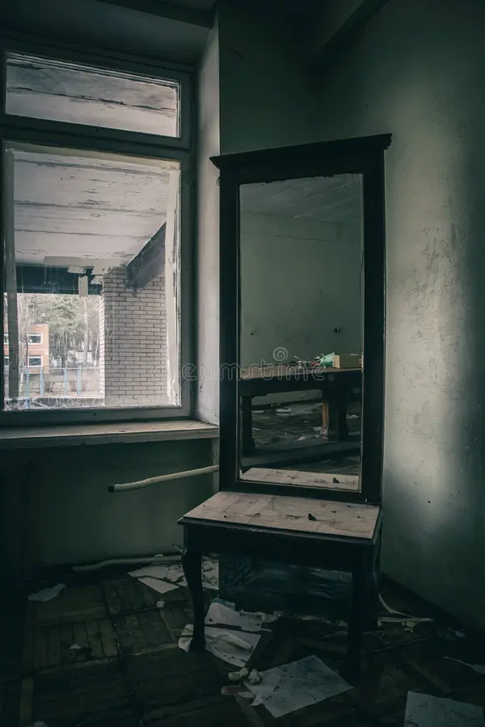

In a remote Spanish village, there once existed an old, dilapidated house that everyone avoided. It was known as "The House of Silence" because, even on stormy or windy days, not a single sound could be heard coming from inside. Neighbors told chilling stories: more than forty years ago, the Morales family suddenly disappeared. No one knew how or why; only the intact furniture and the feeling that something alive lingered within its walls remained.
Daniel, a young man passionate about the paranormal and unexplained phenomena, arrived in the village determined to investigate the house. The day he entered, the air was thick, permeated with a smell of dampness and old, rotten wood. The door closed behind him with a loud bang, and a sudden chill ran down his spine. In the dimness, elongated shadows seemed to move in sync with his breathing.
As he moved forward, he heard a whisper that seemed to come from everywhere:
"You shouldn't be here…"
In the main room, he found an antique mirror covered in dust. Looking inside, he didn't see his own reflection: a girl with black hair, pale skin, and empty eyes appeared, seeming to scream silently. Daniel took a step back, but his feet were glued to the floor. The voice returned, clearer this time:
"If you want to go out, you must choose what you will see…"

Before him, the air distorted, and two paths appeared: one led to a dark, seemingly endless hallway, and another invited him to enter the mirror, where the girl was waiting for him.
The House of Silence
This is Daniel
espejo
espejo
There is a terrifying story with different tragedies